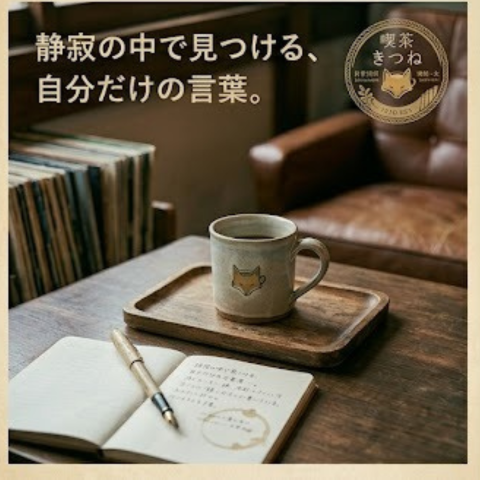

過ごす時間

静寂の中で見つける、自分だけの言葉。
お気に入りの万年筆を走らせ、ノートに思いを綴る。
アナログレコードの温かいノイズが、あなたの思考を優しく包み込む特等席です。

マップ
※この地図はGoogleマップ埋め込み機能のデモです。実際の店舗所在地ではありません。
「都会の路地裏で、時間（とき）を忘れる、本と珈琲の隠れ家」

静寂の中で見つける、自分だけの言葉。
お気に入りの万年筆を走らせ、ノートに思いを綴る。
アナログレコードの温かいノイズが、あなたの思考を優しく包み込む特等席です。
※この地図はGoogleマップ埋め込み機能のデモです。実際の店舗所在地ではありません。